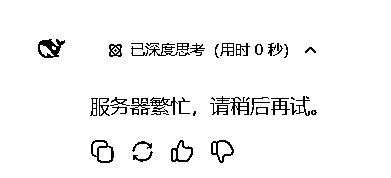
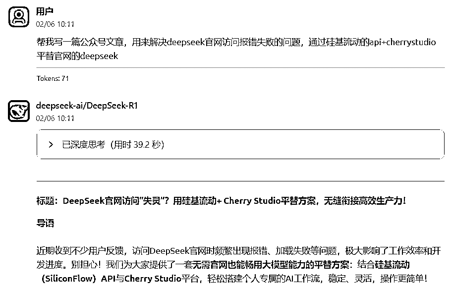
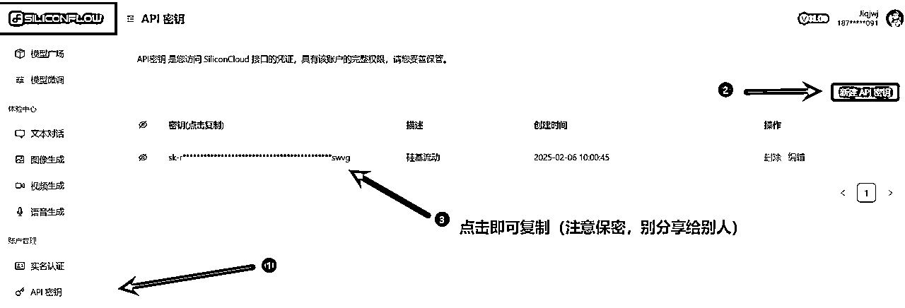
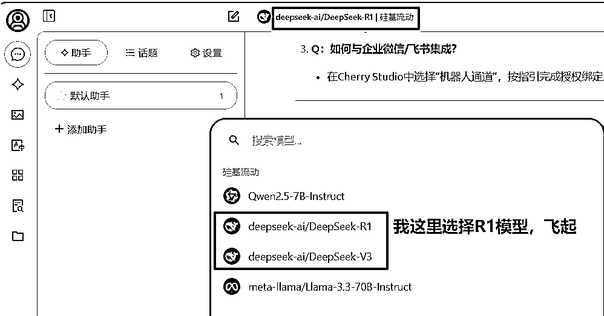

DeepSeek官网访问“服务器繁忙”？用硅基流动+ Cherry Studio平替方案，小白轻松部署！（生财）
来源：https://aqoyanyhfa.feishu.cn/docx/A9y0d0ciToqfD5x6vHHcdDo3nXb
大家好，我是大胡子RPA，昨日开工，用RPA跑deepseek，发现deepseek经常报“服务器繁忙”问题，，极大影响了工作效率和开发进度。别担心！我们为大家提供了一套无需官网也能畅用大模型能力的平替方案：结合硅基流动（SiliconFlow）API与Cherry Studio平台，轻松搭建个人专属的AI工作流，稳定、灵活，操作更简单！

我搭建的deepseek平替AI效果如下：

一、为何官网访问不稳定？这些痛点你是否中招？
- 服务器压力大：用户激增或临时维护可能导致官网卡顿、报错。
- 网络攻击：最近春节期间deepseek受到大量漂亮国黑客的攻击。
所以与其被动等待，不如主动尝试更稳定、更可控的替代方案。
二、平替方案核心工具：硅基流动API + Cherry Studio
- 硅基流动（SiliconFlow）API：高性能大模型，媲美原厂能力
作为国内头部AI服务商，硅基流动提供多模态大模型接口，覆盖文本生成、代码补全、对话交互等场景，性能与DeepSeek官网功能高度匹配，且具有以下优势：
- 低延迟高并发：国内服务器部署，访问速度提升50%以上。
- 按需付费：无需订阅高额套餐，用多少算多少。新用户注册可以直接拿到2000万token(点击直达)
- Cherry Studio：零代码搭建个性化AI工具
Cherry Studio是一个可视化AI应用开发平台，只需简单拖拽即可完成流程设计、API调用、交互界面搭建，无需写代码即可实现：
- 自定义对话机器人、智能写作助手、代码生成器等场景。
三、手把手教程：2步平替DeepSeek官网（重点）
目标：搭建一个与DeepSeek官网功能相似的问答机器人。
Step 1：注册硅基流动API账号
- 访问硅基流动官网，注册开发者账号(目前还无需实名认证，人多可能会关闭这个口子)。
- 进入控制台，创建API Key并领取免费试用额度。

Step 2：在Cherry Studio设置AI
- 网盘下载cherry studio: https://pan.quark.cn/s/c1cbbfaeb285 （官网超慢）
- 粘贴密钥，并添加deepseek的R1和V3模型。
- 设置模型R1

我又可以愉快的与ds玩耍了。
我是大胡子，专注于AI+RPA解决方案，欢迎一起交流deepseek。